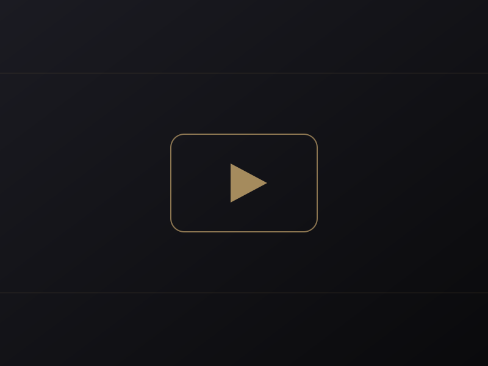
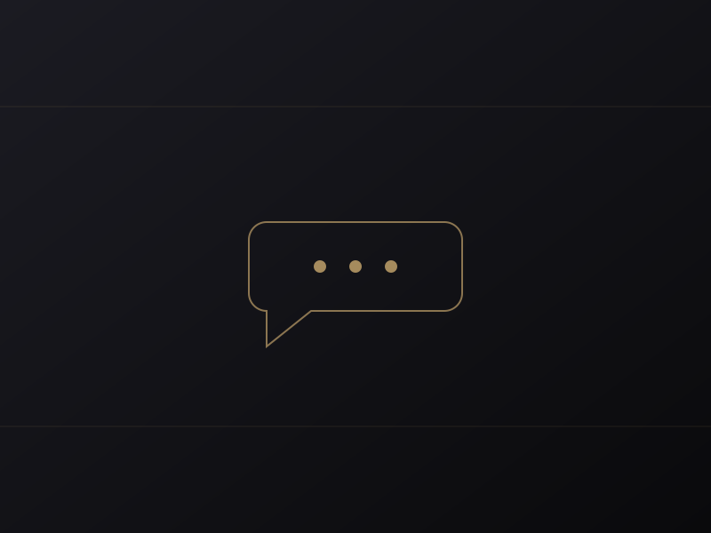
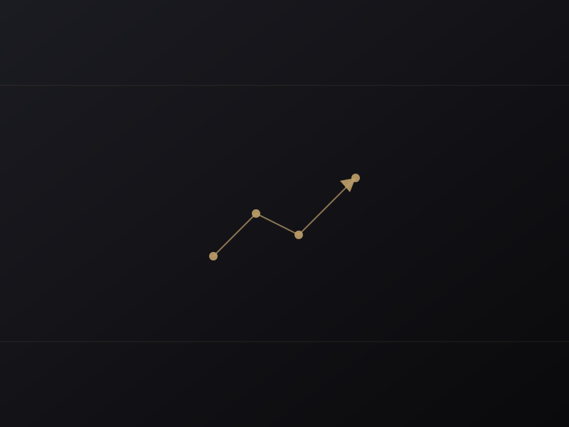

提供サービス

Service 01
YouTube運用代行
チャンネルのコンセプト設計から、企画立案・台本制作・撮影ディレクション・編集・サムネイル・投稿・分析まで。動画づくりのすべての工程をワンストップで代行します。
属人化を避け、再現性のある運用フローを構築。毎月の分析レポートをもとに、再生維持率やクリック率を継続的に改善し、チャンネルを事業の資産へと育てます。
-
主な内容
チャンネル設計／企画・構成／台本・編集／サムネイル制作／分析・改善レポート
Service 02
LINE運用・構築
公式LINEアカウントの構築から、リッチメニュー設計、ステップ配信、セグメント配信、各種自動化まで対応。YouTubeで生まれた関心を、確かな関係性へと変換する導線を整えます。
「動画を見て終わり」にせず、見込み客との継続的な接点をつくることで、問い合わせ・予約・購入といった成果へとつなげます。
-
主な内容
公式LINE構築／リッチメニュー設計／ステップ・セグメント配信／自動応答・タグ運用／効果測定


Service 03
YouTubeコンサルティング
運用の内製化を目指すチームに向けて、戦略設計と伴走支援を提供します。チャンネル分析、企画の壁打ち、改善サイクルの仕組みづくりを通じて、自走できる組織づくりを後押しします。
「外注し続ける」のではなく、「自社の力で伸ばせる」状態へ。データに基づく改善文化を、貴社に根づかせます。
-
主な内容
チャンネル診断／戦略・KPI設計／企画ブラッシュアップ／月次の伴走ミーティング／内製化支援
Why harbor
選ばれる理由・強み
数字に基づく戦略設計
再生維持率・クリック率・登録導線まで指標を分解し、感覚ではなくデータで意思決定。毎月のレポートで改善の根拠を可視化します。
企画から分析までワンストップ
戦略・制作・運用・分析を一つのチームが担当。窓口が分散しないため意思決定が速く、世界観が一貫します。
YouTube×LINEの統合導線
動画で生まれた関心を公式LINEで関係性へ。単発の再生で終わらせず、ファン化と継続的な接点づくりまで設計します。
専属チームによる伴走
担当者がころころ変わらない専属体制。貴社の事業理解を深めながら、長期で並走するパートナーであり続けます。